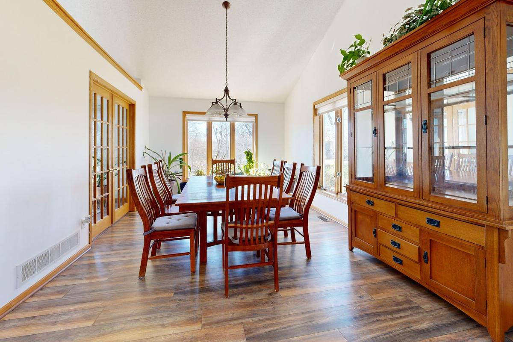

A china cabinet or hutch usually comes out in two pieces, top off the base, with the glass shelves and doors carried separately. The dining table's leaves and legs come off, the chairs go out stacked, and the buffet goes last. Check a donation route first. What is left, a two-person crew can take out in one visit.
The formal dining room is often the heaviest room in the house and the one used least. The table comes out for holidays, the hutch holds dishes nobody has eaten off in years, and the buffet is full of linens and serving pieces. We get called for this room most often when a house is being sold, when a parent is moving somewhere smaller, or when someone finally wants the space for an office or a playroom.
Why a dining room is harder to clear than it looks
Two things make this room slow.
The first is the wood. Dining furniture from the seventies through the nineties was often solid hardwood or thick veneer over a heavy core. A hutch that looks like one cabinet can weigh far more than a sofa, and it carries that weight high, which makes it top-heavy the moment it tilts.
The second is the glass. China cabinets have glass doors, glass side panels and glass shelves, and sometimes a mirrored back and a light fixture wired inside the top. None of that likes to be carried while it is still installed. A shelf that slides loose on a staircase is how a quick job turns into broken glass on the carpet.
What comes apart and what does not
Look at how each piece is built before anyone lifts.
- The china hutch. Most are two pieces: a glass-fronted top that sits on a closed base. The top is usually held by gravity, a few screws or a set of brackets. Once the shelves come out, it lifts off and the two halves go out separately.
- The buffet or sideboard. A long, low, one-piece cabinet. It does not come apart, so the doors and drawers come out and the case has to fit the path.
- The dining table. Leaves come out first. Many tables have legs that unbolt from the apron, and pedestal tables usually separate the top from the base. A table that was built in place or glued at the joints goes out whole.
- The chairs. Light on their own, but a set of eight is still eight trips unless they stack.
Our post on getting old furniture out of the house covers the doorway and stairwell side in more depth. The short version holds here too: the path out matters more than the weight.
Empty the hutch before anyone touches it. The dishes, glassware and anything in the buffet drawers need to be out and boxed before the crew arrives, and the glass shelves are easiest to handle once the shelf is bare. If the cabinet has a light inside, unplug it. A cabinet with things still inside shifts during the carry, and that is how glass breaks.
Who decides about the china
This is the part that takes the longest, and it is not a junk removal decision.
The dishes in a china cabinet are often a wedding set, a grandmother's pattern, or the good glasses from a family that entertained. Deciding what stays in the family is a conversation for the family, and it goes better when nobody is waiting on a truck. We are not appraisers, and we do not value dishes, silver or crystal. If you think something is worth having looked at, have it looked at before the day of the pickup.
What we can say is that the dishes and the furniture are two separate decisions. Keep the pattern, let the hutch go. Or keep the hutch for a different room and let the everyday dishes go to donation. Families usually get stuck when they treat the whole room as one choice. If this is part of a bigger move, our post on downsizing a parent into assisted living walks through the sort order that tends to work.
Where the furniture can go
If the pieces are solid and in good shape, check a donation route first. Habitat for Humanity ReStores accept donated furniture and home goods at many locations, but each store sets its own list, so check before you load a car.
Be ready for a no on the big pieces. Formal dining sets and china hutches are some of the hardest furniture for donation centers to place, because fewer homes have a formal dining room to put them in. A plain solid wood table and a set of sturdy chairs have a much better chance than a matching hutch and buffet. We covered the donation side in more detail in the post on where to donate furniture in DFW.
A lot of furniture never gets a second home. The EPA's durable goods data put furniture and furnishings at about 12.1 million tons generated in 2018, with about 9.7 million tons of that going to landfill. That is the reason to try donation first and not skip straight to the curb.
If you have time and can get the pieces to the curb yourself, your city may take them as bulky trash. Plano runs a bulky waste collection program with its own rules for what goes out and when. The catch, again, is carrying a hutch to the curb, which is usually the whole problem.
What we haul on a dining room job
The hutch is rarely alone. On a typical dining room clear-out, we take:
- the china cabinet or hutch, top and base
- the buffet, sideboard or server
- the dining table, its leaves and the full set of chairs
- the area rug under the table and the old light fixture if it has already been taken down
- boxed dishes and glassware the family has decided to let go
We do the lifting and the carry, and we look at the path before anything moves. If a piece is not going to fit through a door whole, we tell you that up front and talk through how it comes apart. These are our own crews, not gig labor, which matters when the job is inside a room full of glass.
In Plano, a lot of these calls come from older houses east of Central, and our notes on hauling a dining set and hutch out of an older Plano house cover how that usually runs there, and the wider Plano junk removal page covers alley access and the city's own programs. If the formal living room is going at the same time, see how we handle taking an old sofa out of a McKinney home.
What stays behind
We do not take household hazardous waste. The buffet drawer sometimes turns up old cans of furniture polish, wood stain or silver cleaner, and those go to your city's program instead. In Plano that is the household chemical collection service, and most DFW cities offer something similar at no charge.
How the pickup runs
Send us a photo of the hutch, the table and anything else leaving the room. Tell us if there are stairs or a tight turn at the front door.
A crew looks at what is going and gives you a firm number before anything is loaded. The quote is the bill, and disposal is included. We are affordable and priced fair, based on how much there is to take. Usable pieces go to local donation partners where they will take them, metal and cardboard go to recyclers, and our stated goal is to keep more than half of every load out of the landfill.
If the dining room is one room in a whole-house clear-out, our estate cleanouts page covers how a full house runs, and the post on what is left after the estate sale covers the pieces that did not sell.
Call before noon and same afternoon is typical across the northern suburbs. When you are ready, tell us what needs to go or read more about how our furniture removal works.
Frequently asked questions
Do I need to empty the china cabinet before you come?
Yes. Please have the dishes, glassware and drawer contents out and boxed. We can take the boxes too if they are leaving, but the cabinet itself needs to be empty before it is moved.
Can you take the hutch apart?
Most hutches separate into a top and a base, and we handle that on site. If the piece is one solid unit, we check the path first and tell you whether it goes out whole.
Will a donation center take my dining set?
Sometimes. A solid wood table and sturdy chairs have the best chance. Matching hutches and buffets are often turned down, so check with the store before hauling them there yourself.
Can you tell me what my china is worth?
No. We are not appraisers and do not value dishes, silver or crystal. If you think a set may be worth something, have it looked at before the pickup day.
Can you take the table and leave the chairs?
Yes. Tell us exactly which pieces are going and which are staying, and we take only what is on the list.
The table was set for a lot of years. When the room is ready for something else, the whole set can leave in one visit.